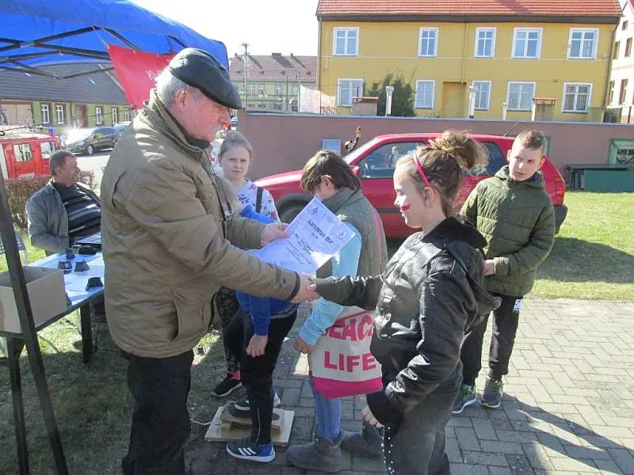
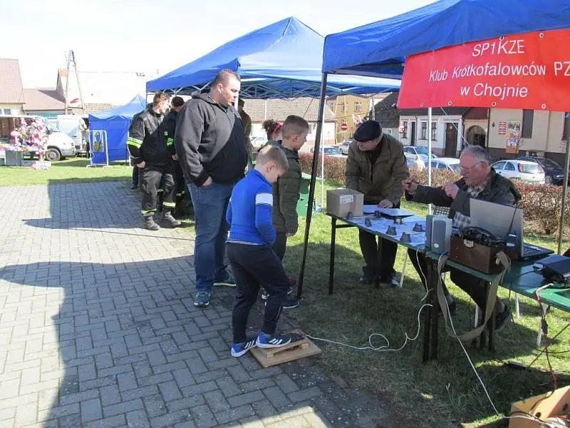

100-lecia Odzyskania Niepodległości
- Moryń.
{kind=link}
Na zaproszenie Pani Mai Cacek Dyrektora Miejskiego Ośrodka Kultury w Moryniu w dniu 7 kwietnia 2018r. braliśmy udział w obchodach 100-lecia Odzyskania Niepodległości przez Polskę w gminie Moryń.
Na placu przed Urzędem Miejskim zainstalowaliśmy radiostację oraz sprzęt do
nadawania telegrafią. Propagacja tego dnia nie dopisała natomiast zainteresowanie naszym sprzętem
było bardzo duże. Młodzież była zainteresowana możliwością nauki telegrafii oraz próbami nadawania
,, Lewą Nogą’’ komunikatu SOS lub swojego imienia za co zostawali nagrodzeni pamiątkowym Dyplomem
QLF. Obok naszego stanowiska można było obejrzeć eksponaty Muzeum Pamiątek Wojsk Inżynieryjnych z
Gozdowic.
Była także możliwość wysłuchania koncertu Orkiestry Morskiego Oddziału Straży Granicznej.  Każdy uczestnik festynu mógł się poczęstować wojskową grochówką i ciastem przygotowanym przez Koła Gospodyń Wiejskich z terenu gminy Moryń.
{kind=link}
W wyjeździe brali udział ze strony klubu SP1KZE Paweł SP1MWN, Bogdan SP1TMB,
Jurek SP1MWF, Marek SQ1NXW. Gościnnie brał udział Prezes ZOT PZK Janusz SP1TMN.
{kind=link}
{kind=link}